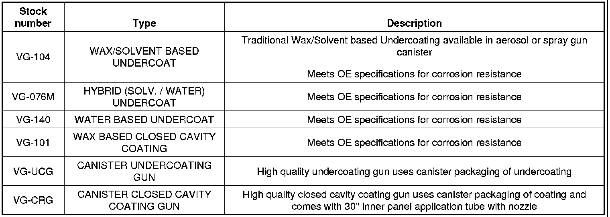
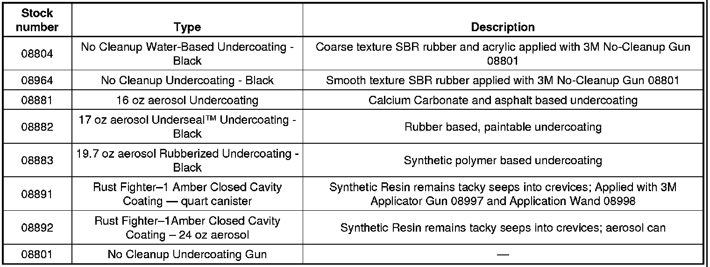
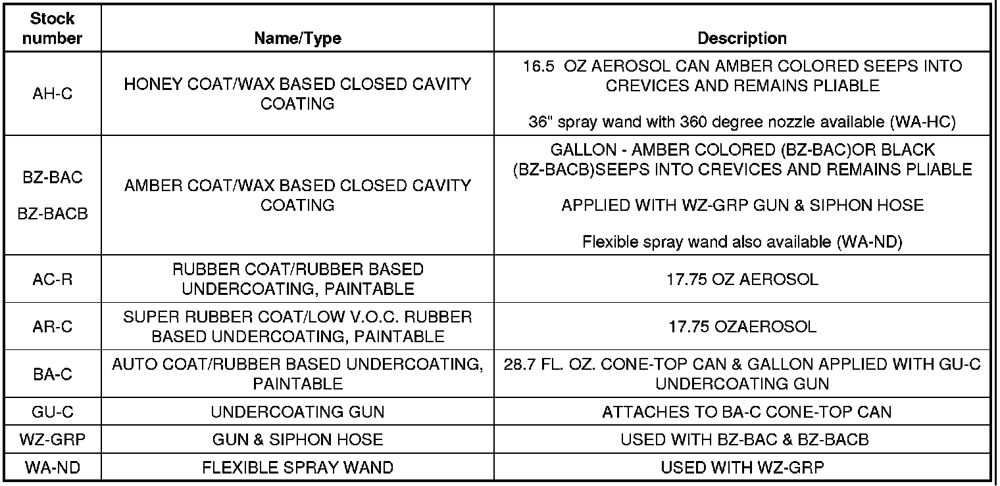
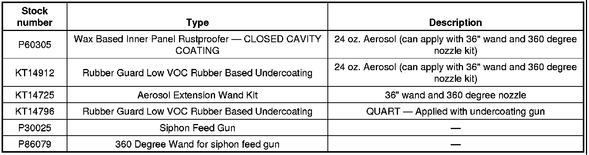

Body - Application of Anti-Corrosion Materials
INFORMATIONBulletin No.: 01-08-51-003C
Date: September 21, 2011
Subject: Application of Anti-Corrosion Materials
Models:
2012 and Prior GM Passenger Cars and Light Duty Trucks
Supercede:
This bulletin is being revised to add model years and update the information and product/supplier tables. Please discard Corporate Bulletin Number 01-08-51-003B (Section 08 - Body and Accessories).
After a collision, some vehicle structure areas such as frame rails, cross-members and rocker panel sections may need to be repaired. In most cases, the anti-corrosion materials need to be removed to perform these repairs. These materials are classified into two types: Closed Cavity coatings and Undercoat coatings. The primary difference is the way the products set up or "dry". Both are intended to protect the surface they are applied to from corrosion caused by water, salt water or Magnesium Chloride blended de-icing compounds used to thaw icy winter roads. They also can provide a measure of sound deadening.
The Closed Cavity coatings remain sticky to the touch and will seep into seams initially and over extended periods of time. Closed Cavity coatings provide the best corrosion protection inside of rocker panel sections, pillar sections, frame rails, cross-members, doors, rear compartment lids and closed areas of hoods - anywhere that is concealed or closed off to exterior surfaces.
The Undercoat coatings are "dry to the touch" and offer the best corrosion protection and sound deadening for floor pans, wheelhouses, inside rear compartment and underhood areas - anywhere the coated surface is exposed.
Below is a listing of Undercoat coatings and Closed Cavity coatings that GM believes to be reliable. While others may exist, we have found these products, or equivalents to them, can be used with satisfactory results. Always use these products according to their manufacturer's recommendations.
Undercoating and Closed Cavity Coatings
The following products are available from *Automotive International/Valugard.

The following products are available through your local *3M(R) distributor. Information about 3M(R) product retailers in your area may be obtained at 1-866-364-3577 or at www.mmm.com/automotive.

The following products are available from *Crest Industries, Inc. at 1-800-822-4100 or www.crestauto.com.

The following products are available from *Kent Automotive. Contact them at 1-888-YES-KENT (888-937-5368) or at www.kent-automotive.com.

*We believe these sources and their products to be reliable. There may be additional manufacturers of such material. General Motors does not endorse, indicate any preference for or assume any responsibility for the products from these firms or for any such items which may be available from other sources.

Disclaimer